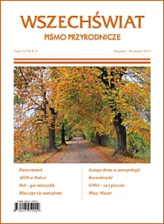

Wspomnienie z pobytu w RPA
Pobyt w Republice Południowej Afryki w 2013 roku był dla mnie wyjątkowym doświadczeniem i jedną z tych podróży, które pozostają w pamięci na zawsze. To był czas intensywnych obserwacji, spotkań z niezwykłą przyrodą, fascynującą kulturą oraz codziennością zupełnie inną od tej, którą znałam wcześniej.
RPA zapamiętałam jako kraj kontrastów, ogromnej przestrzeni, różnorodnych krajobrazów i wyjątkowej energii. Każdy dzień przynosił nowe wrażenia, a kontakt z naturą i lokalnym otoczeniem pozwalał spojrzeć na świat z innej perspektywy. Ta podróż do dziś pozostaje dla mnie źródłem inspiracji, refleksji i wdzięczności.
Z tamtego pobytu powstał również artykuł opublikowany w czasopiśmie Wszechświat. Link do publikacji znajduje się poniżej.
Jednym z miejsc, które szczególnie zapadły mi w pamięć, był Kirstenbosch. To jeden z dziewięciu Narodowych Ogrodów Botanicznych administrowanych przez SANBI, czyli South African National Biodiversity Institute, na terenie Republiki Południowej Afryki.
Kirstenbosch jest najstarszym i największym ogrodem w Południowej Afryce, a zarazem trzecim co do wielkości ogrodem botanicznym na świecie. To miejsce zachwyca nie tylko skalą i położeniem, ale też znaczeniem przyrodniczym i edukacyjnym, dlatego stało się ważnym punktem odniesienia również dla mojego artykułu.

Przeczytaj artykuł w czasopiśmie Wszechświat